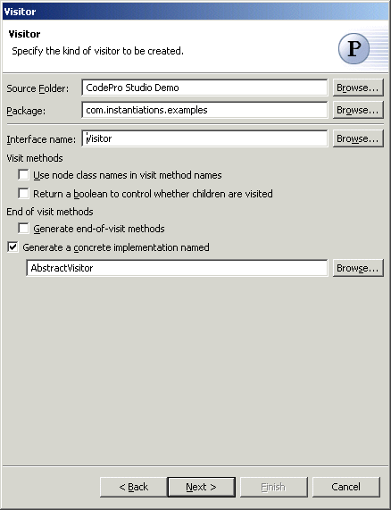
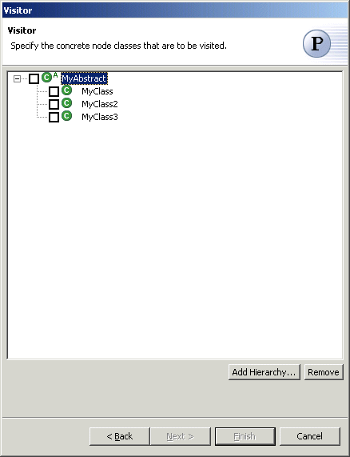

Visitor Pattern
The  Visitor Pattern represents an operation to be performed on the elements of an object
structure. Visitor lets you define a new operation without changing the classes of the
elements on which it operates.
Visitor Pattern represents an operation to be performed on the elements of an object
structure. Visitor lets you define a new operation without changing the classes of the
elements on which it operates.
Wizard

| Option | Description | Default |
| Source folder | Enter a source folder for the new class. Either type a valid source folder path or click Browse to select a source folder via a dialog. | The source folder of the element that was selected when the wizard was started. |
| Package | Enter a package to contain the new class. Either type a valid package name or click Browse to select a package via a dialog. | The package of the element that was selected when the wizard was started. |
| Interface name | Type or click Browse to select an interface | <Visitor> |
| Use node class names in visit method names | Determines whether node class names wil be used in visit method names. | <false> |
| Return a boolean to control whether children are visited | Determines whether a boolean is returned to control whether children are visited. | <false> |
| Generate end-of-visit methods | Determines whether end-of-visit methods should generated. | <false> |
| Generate a concrete implementation | Determines whether a concrete implementation should be
generated . |
<true> |
| Concrete implementation | Type or click Browse to select a concrete
implementation class. . |
<AbstractVisitor> |

| Option | Description | Default |
| Specify the concrete node classes that are to be visited. | Click Add Hierarchy to choose a hierarchy of classes to be visited. | <blank> |
Applicability
Use the Visitor pattern when
- an object structure contains many classes of objects with differing interfaces, and you
want to perform operations on these objects that depend on their concrete classes.
- many distinct and unrelated operations need to be performed on objects in an object
structure, and you want to avoid "polluting" their classes with these
operations. Visitor lets you keep related operations together by defining them in one
class. When the object structure is shared by many applications, use Visitor to put
operations in just those applications that need them.
- the classes defining the object structure rarely change, but you often want to define new operations over the structure. Changing the object structure classes requires redefining the interface to all visitors, which is potentially costly. If the object structure classes change often, then it's probably better to define the operations in those classes.
Additional Resources
http://c2.com/cgi/wiki?VisitorPattern
http://www.wikipedia.org/wiki/Visitor_pattern
http://www.cmcrossroads.com/bradapp/javapats.html#Visitor